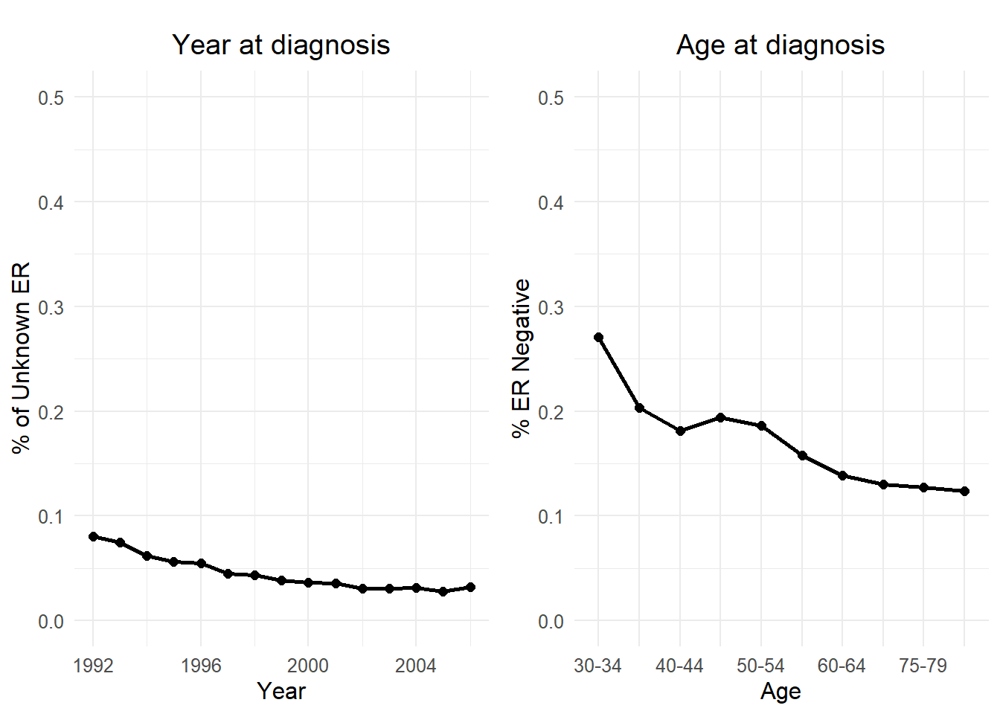
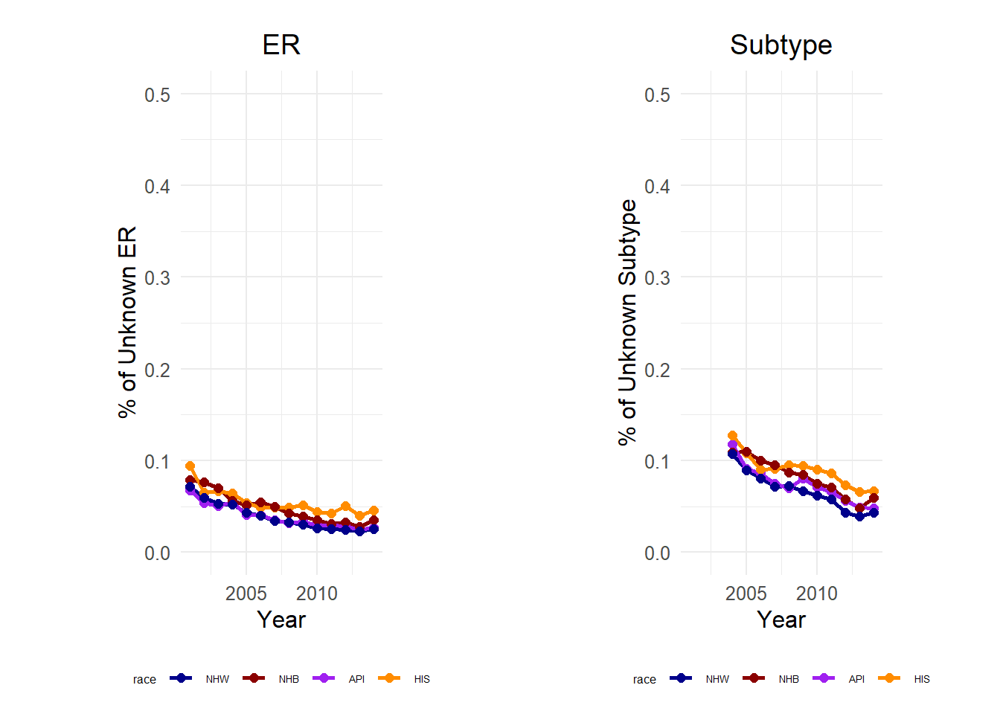
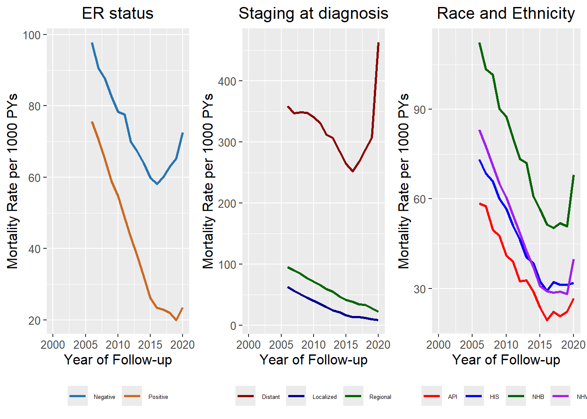
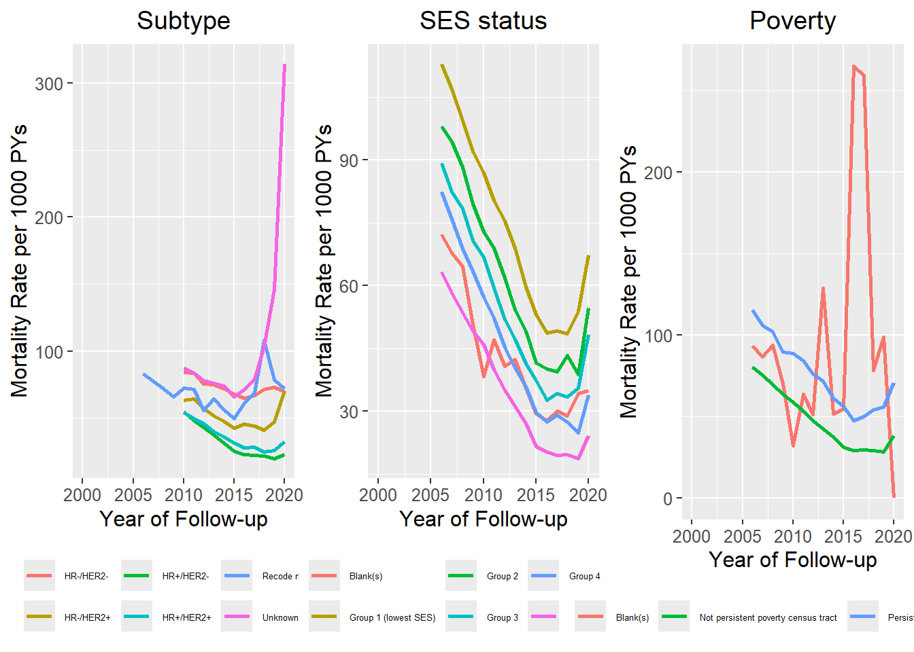
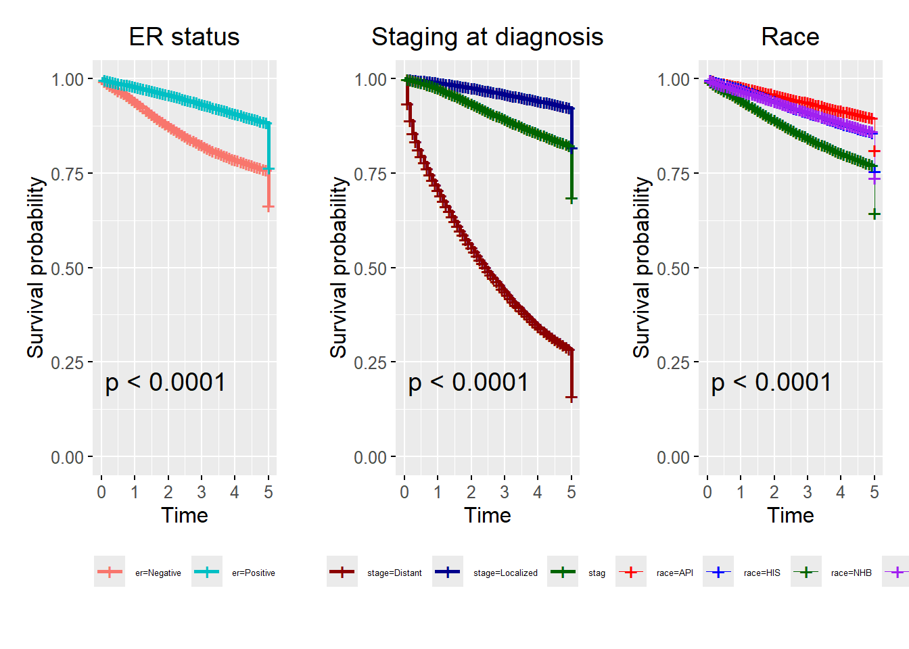
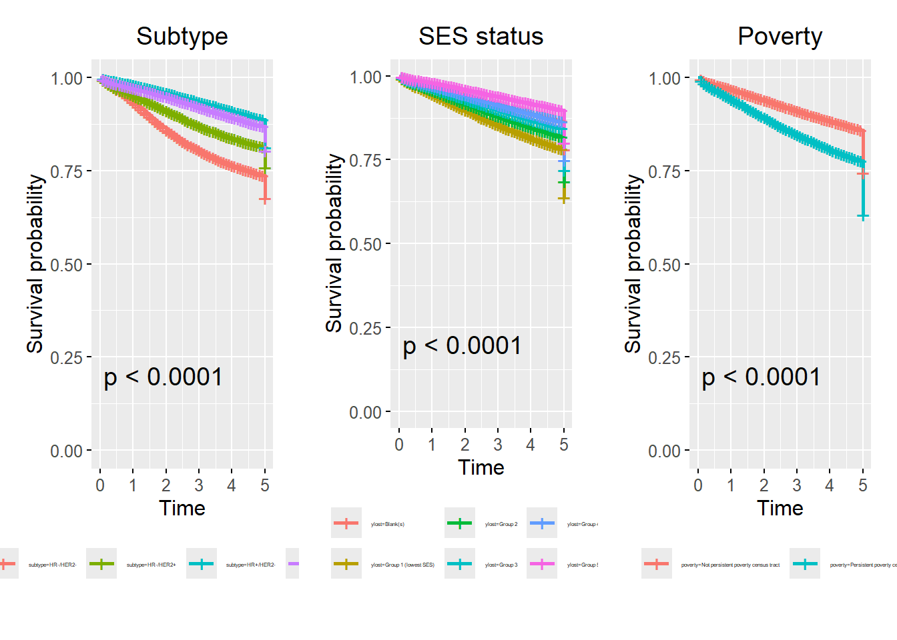

Malignant breast cancer survival in the United States: seer17 (Specialized dataset)
Introduction
Methods
Data source
Data was obtained from the Surveillance, Epidemiology, and End Results (SEER) Program’s Seventeen Database (Specialized dataset), accessed through SEER*Stat version 8.4.0. The dataset comprises malignant breast cancer cases in females aged 35 to 84 years, spanning from 1992 to 2020 with follow-up until December 2020. Age at diagnosis was categorized into 5-year age groups (35 - 39, …, 80-84) and one-year time spans. Census tract-level socioeconomic status (SES) is available in quintiles. Race and ethnicity definitions follow the criteria established by the SEER program, employing an algorithm to recode detailed race and origin variables into four groups: Non-Hispanic White (NHW), Non-Hispanic Black (NHB), Hispanic (HIS), and Asian and Pacific Islander (API). We also conducted analyses using census tract-level rurality variables to facilitate assessments of urban/rural differences and persistent poverty. For more information about the definitions and methodology used to create these specialized variables, refer to SEER Census Tract-Level Variables.”
Statistical analysis :
The study assessed the proportions of ER status, breast cancer subtype, cancer staging, SES status, and persistent poverty within each race and ethnicity group. Mortality rates were calculated per 1000 person-years. Kaplan-Meier survival curves were generated, and differences between the curves were evaluated using the Log-Rank p-value. To quantify the Hazard ratios between the variables, a Cox proportional hazards model was applied. All statistical analyses were conducted using the R software platform.
Results
Unspecified ER
Figure 1A
Figure 1A presents the annual proportions of breast cancer cases with unknown ER status. Figure B details the yearly proportions of breast cancers with ER-negative status.”
Figure 1B

Figure 1B presents the annual proportions of breast cancer cases with unknown ER status by race and ethnicity
Characteristic of the breast cancer patients cohort
Table 1 presents the characteristics of breast cancer cases and proportions by race and ethnicity. We observed heterogeneity among race and ethnicity groups in the proportions of ER status, cancer stage, subtype, SES, and poverty. The highest proportion of ER-negative status was found among Non-Hispanic Blacks (NHB, 28.10%) compared to Hispanics (18.82%), Non-Hispanic Whites (NHW, 14.66%), and Asians/Pacific Islanders (API). NHB and Hispanics presented highest proportion of regional(NHB 34.74%, Hispanics 34.75%) and distant stages (NHB 8.38%, Hispanics 5.63%) compared to NHW (regional 27.80%, distant 5.34%) and API. The difference in cancer subtypes is notably apparent in the HR-/HER- subtype, with NHB showing the highest percentage (14.79%) among the racial groups analyzed. SES status in NHB (34.64%) and Hispanics (20.31%) constituting a significantly larger proportion of Group 1, the lowest SES category, in contrast to NHW (9.57%) and API. When examining the impact of living in persistent poverty census tracts, NHB (21.28%) and Hispanics (12.45%) are disproportionately affected compared to NHW (4.26%) and API.
Table 1. Characteristics of the breast cancer cases and proportion by race and ethnicity, 2006 - 2020
| var | API_n | API_Percentage | HIS_n | HIS_Percentage | NHB_n | NHB_Percentage | NHW_n | NHW_Percentage |
|---|---|---|---|---|---|---|---|---|
| Stage | 0 | ========== | 0 | ========== | 0 | ========== | 0 | ========== |
| Localized | 41291 | 64.2922% | 49237 | 57.7235% | 39442 | 55.1783% | 295282 | 65.6359% |
| Regional | 18859 | 29.3644% | 29638 | 34.7464% | 24832 | 34.7393% | 125057 | 27.7979% |
| Distant | 3114 | 4.8487% | 4798 | 5.6250% | 5988 | 8.3771% | 24045 | 5.3448% |
| Unknown/unstaged | 960 | 1.4948% | 1625 | 1.9051% | 1219 | 1.7053% | 5495 | 1.2214% |
| Total | 64224 | 100% | 85298 | 100% | 71481 | 100% | 449879 | 100% |
| ER status | 0 | ========== | 0 | ========== | 0 | ========== | 0 | ========== |
| Positive | 51573 | 80.301% | 65033 | 76.242% | 48271 | 67.530% | 368116 | 81.825% |
| Negative | 10419 | 16.223% | 16054 | 18.821% | 20089 | 28.104% | 65949 | 14.659% |
| Recode not available | 301 | 0.469% | 382 | 0.448% | 213 | 0.298% | 950 | 0.211% |
| Borderline/Unknown | 1932 | 3.008% | 3829 | 4.489% | 2908 | 4.068% | 14865 | 3.304% |
| Total | 64225 | 100% | 85298 | 100% | 71481 | 100% | 449880 | 100% |
| Subtype | 0 | ========== | 0 | ========== | 0 | ========== | 0 | ========== |
| HR+/HER2- | 34457 | 53.650% | 43406 | 50.887% | 31487 | 44.049% | 239869 | 53.318% |
| HR-/HER2- | 4073 | 6.342% | 7420 | 8.699% | 10572 | 14.790% | 29262 | 6.504% |
| HR-/HER2+ | 3055 | 4.757% | 3496 | 4.099% | 2947 | 4.123% | 12160 | 2.703% |
| Unknown | 3178 | 4.948% | 5194 | 6.089% | 3807 | 5.326% | 19272 | 4.284% |
| HR+/HER2+ | 6010 | 9.358% | 7796 | 9.140% | 5894 | 8.246% | 31675 | 7.041% |
| Recode not available | 13452 | 20.945% | 17986 | 21.086% | 16774 | 23.466% | 117642 | 26.150% |
| Total | 64225 | 100% | 85298 | 100% | 71481 | 100% | 449880 | 100% |
| SES status | 0 | ========== | 0 | ========== | 0 | ========== | 0 | ========== |
| Group 1 (lowest SES) | 3225 | 5.098% | 17112 | 20.310% | 24436 | 34.644% | 42362 | 9.566% |
| Group 2 | 5890 | 9.311% | 17767 | 21.087% | 14814 | 21.003% | 59812 | 13.506% |
| Group 3 | 9226 | 14.584% | 16900 | 20.058% | 11827 | 16.768% | 76313 | 17.232% |
| Group 4 | 16212 | 25.628% | 16876 | 20.029% | 11539 | 16.359% | 105707 | 23.870% |
| Group 5 (highest SES) | 28707 | 45.379% | 15601 | 18.516% | 7918 | 11.226% | 158658 | 35.826% |
| Total | 63260 | 100% | 84256 | 100% | 70534 | 100% | 442852 | 100% |
| Poverty | 0 | ========== | 0 | ========== | 0 | ========== | 0 | ========== |
| Not persistent poverty census tract | 61890 | 96.42% | 74591 | 87.55% | 56251 | 78.72% | 430516 | 95.74% |
| Persistent poverty census tract | 2299 | 3.58% | 10610 | 12.45% | 15202 | 21.28% | 19162 | 4.26% |
| Total | 64189 | 100% | 85201 | 100% | 71453 | 100% | 449678 | 100% |
Mortality rates per 1000 PY
Figure 2A

Figure 2B

Kaplan-Meier survival curves
Figure 3A

Figure 3B

Proportional Hazards Cox Model
Age is associated with an incremental yearly increase in the hazard rate by 4% (HR 1.04, 95% CI, p<0.001). The analysis suggested protective effect of being ER-positive, which is associated with a 46% reduction in the hazard rate compared to ER-negative patients (HR 0.54, 95% CI, p<0.001). Distant stage cancers are associated with a 14.25-fold increase in the hazard rate (HR 14.25, 95% CI, p<0.001), and regional stage cancers are associated with a 2.37-fold increase (HR 2.37, 95% CI, p<0.001) compared to localized cancers. Regarding race and ethnicity, Asians/Pacific Islanders (API) exhibit a 16% reduction in the hazard rate (HR 0.84, 95% CI, p<0.001), whereas Non-Hispanic Blacks (NHB) showed a 31% increase in the hazard rate (HR 1.31, 95% CI, p<0.001). Additionally, significant gradients are observed across SES groups, with the lowest SES group experiencing a notable increase in the hazard rate (HR 1.66, 95% CI, p<0.001). Furthermore, residing in a persistent poverty census tract is associated with a modest but significant increase in the hazard rate (HR 1.09, 95% CI, p<0.001).
Analysis of proportionality, colinearity and Cox model residuals is provided in Supplemntary materia.
| coef | exp(coef) | se(coef) | z | Pr(>|z|) | |
|---|---|---|---|---|---|
| age | 0.0435613 | 1.0445240 | 0.0003778 | 115.313063 | 0.000000 |
| erPositive | -0.6216990 | 0.5370312 | 0.0096657 | -64.320455 | 0.000000 |
| stageDistant | 2.6565235 | 14.2466749 | 0.0112382 | 236.383127 | 0.000000 |
| stageRegional | 0.8647155 | 2.3743305 | 0.0095023 | 91.000197 | 0.000000 |
| raceAPI | -0.1745879 | 0.8398030 | 0.0170704 | -10.227524 | 0.000000 |
| raceHIS | -0.0151453 | 0.9849688 | 0.0135488 | -1.117836 | 0.263637 |
| raceNHB | 0.2682434 | 1.3076653 | 0.0124333 | 21.574612 | 0.000000 |
| ylostGroup 1 (lowest SES) | 0.5054947 | 1.6578055 | 0.0157742 | 32.045671 | 0.000000 |
| ylostGroup 2 | 0.4279888 | 1.5341689 | 0.0133068 | 32.163105 | 0.000000 |
| ylostGroup 3 | 0.3252843 | 1.3844242 | 0.0130404 | 24.944439 | 0.000000 |
| ylostGroup 4 | 0.2095003 | 1.2330617 | 0.0125437 | 16.701664 | 0.000000 |
| povertyPersistent poverty census tract | 0.0832186 | 1.0867793 | 0.0174951 | 4.756668 | 0.000002 |